MEE Residency Log
Initial proposal
What interests me the most when working with archives is the tension between the private, subjective, personal and the systemic. The archival data is both an entry point into someone’s individual story and a part of an institutionalised view on history, organized and preserved in the most systematic way. I am curious about what happens when the private story doesn’t quite fit in the frame designated for it.
I want to explore a collection of photo albums within the Gelderland archive. I am curious to research what happens when one’s privately curated photo collection enters a national archive. Collectie Gelderland holds entries titled, for example, “Fotoalbum met 141 foto’s”, where only the sides of the cover are displayed, while the photographs from it can only be found as separate database entries, missing the original layouts, selections, and titles. I want to research the unresolved potential of such objects to tell stories: someone’s life is bound within these covers, yet remains out of sight. I will approach the Beeld en Geluid archive from a similar perspective of objects holding meaning for both one’s private story and the archival representation of the time period. From this perspective, cassette tapes become particularly interesting objects. Once used as a personal, hands-on way to collect and share recordings you like, they are often being archived as a “voorbeeld van drager.”
I am interested in how narrative, sentimental objects are transformed into metadata, and how exactly they are seen within the shift from the highly personal to the public. What is lost in this translation? How do personal captions become factual, descriptive titles required for official archiving processes? How do layouts, curated by individuals, become detached into separate entries in a database? I want to look for potential stories that unravel in these transformations, and for graphic ways to trace, map, and document them.
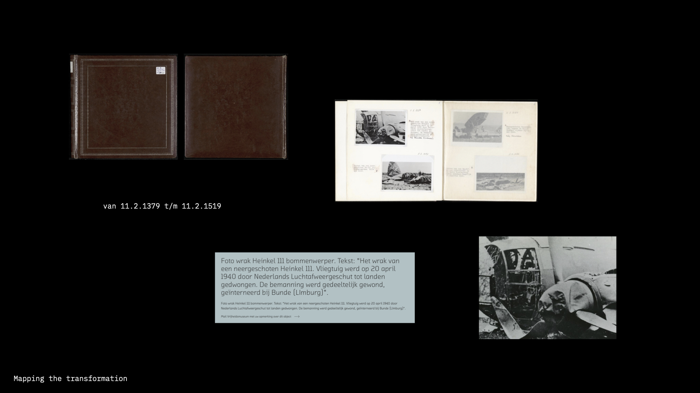
Entry 01: Beeld & Geluid Introduction visit
Conversation keywords:→ Media landscape
→ Media literacy
→ After videos are digitised, they are still stored as physical tapes → tape reader
→ Social media is stored (What protocols are in place? What is being preserved? How is the selection made? Can we trace the way how social media algorithms influence the archive's selection?)
→ Recordings of websites
→ Emulators of games
→ Research team, exploring ways of preserving and documenting new mediums, constructing new policies
Q: Is there a visible transition in the collection as rare technologies become cheaper and more widespread? Is there a clear chronological progression from one medium to another?
→ Each carrier also requires a reader from its specific time. Dependency not only on a particular technology, but also on human knowledge and skill.
→ Fading of knowledge
→ Race against time
→ Speculative scenarios (?) → "If the bomb falls" → I find it interesting that, when asked what could happen to the archive, two archivists simultaneously named this specific scenario, whereas, as an outsider, I would rather name a flood or an accidental fire.
→ Restoration
→ Entries of damaged film? What happens if frames are missing? Can you find damaged entries in the collection? Are they marked as such?
→ Stills filling in the missing frames
→ Looking for other copies of the damaged tape
→ Gaps / Missing frames
Q: Are there cassette tapes with layered recordings, traces of being overwritten?
→ Special effects in film? Amateur editing, manual colouring of frames (?)
→ Faster frame rate → People misinterpreting the original speed of the video due to technological “translation”.
Possible directions:
→ Photo albums
→ Cassette tapes
→ Postcards
Loose thoughts, observations and rabbit holes
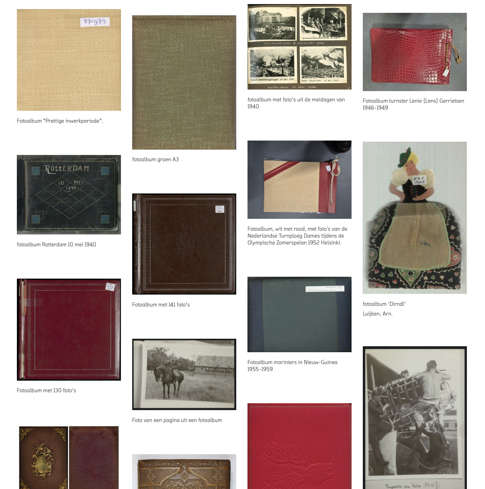
Subjectively recreating archival entries, following the metadata description. How can this translation work retrospectively? Where are the pitfalls? → Photo albums with pictures taken out? Absence as representation of the private authorship
Some metadata seems excessively descriptive, but is it actually functional?
In my initial database wanderings, I found a surprisingly large number of photo albums related to the Olympic Games. At first glance, none of them related to Gelderland, which made me wonder why they belonged in the collection.

In the initial research, I was very disappointed to find out that the majority of photo albums, including those titled with the precise number of images they contain, were related to WWII and belonged to Nazi officers. As a designer, I am very conscious of giving stories or content a stage. Can you detach the visual from its inhumane context and use it as an example on an unrelated topic? I decided to continue my research elsewhere.

A deep dive into the archive
→ Table of contents in a photo album → no images
→ Unique layouts, collages - Photo album of a carpenter school teacher
→ 1914-1918
→ Photos detached from a cover, personal selection
→ From Kröller-Müller collection
→ WWII German photo album, a woman documenting the life of her dead husband
→ In the photo a woman looking at a photo album a man is watching with her
→ Family album, imperfect photographs
→ Wartime photo album
→ Only cover, family photos described
→ A French stamp, personal photos and behind a transparent sheet
→ Inside of the cover of Photobook 7A
→ Inside of the cover for Photo Book 7A → empty inside cover
→ Big Ben photo missing from the spread
→ Loose, coloured topographic photos
→ Passport photo
→ Yellow stickers, arrows, Indonesia → Who’s depiction is important?
→ Diagonal composition
→ Map
→ Photos for a magazine
→ Note to donate the photo album
→ Blurred portrait
→ Cover, description of all the photos
→ Singular image, Versailles
→ Very curated photo album, a present, rural photography
→ The faithful guard at the gate
→ Cabaret
→ New wall
→ Uri Nooteboom against a pillar of the Waal Bridge
→ Note: I do not know → photo album 4.2.1.14000
Postcards:
Kröller-Müller collection of correspondence between various artists and Martin and Mia Visser:
→ Hanne Darboven
→ Sol LeWitt
→ Sol LeWitt
→ Hanne Darboven
How can I think more systematically?
Entry 02: First encounters
Questions to Podiumkunst Archive:
- Whether any collections contain cassettes that show traces of being overwritten. For example, when commercial recordings were taped over with home recordings or handmade mixtapes, and these different layers are still visible.
- I also feel that I still know too little about cassette tape as a medium itself. Maybe there is someone who could tell me more about the technical side of working with cassette tapes, or how the medium aged as newer technologies were introduced. I think it might be interesting to trace the path from cassettes being a more specialized medium, to something very widespread, and then eventually no longer used. I’m curious about what happens to personal memories when they are stored on a medium that goes through this process.
- How archives deal with damaged tapes.
- I also came across these two articles on the Podiumkunst website → Miles Niemeijer, → Esther Kock. I think the DIY cassette culture described there connects a lot to what I’m interested in, so I was wondering whether they might be the people I could speak to as part of the research.
I’ve decided to go through the initial observations once again:
Fotoalbum paardensport Olympische Zomerspelen 1928 Amsterdam van Pahud de Mortanges, 1928
Photo album with 49 photos of the "Equiter Competitions" of the 1928 Summer Olympics Amsterdam with 32 press photos and 17 smaller private photos from family property of Charles Pahud de Mortanges (1896-1971) with handwritten note from 1972 by Mrs. T.G.B. Pahud de Mortanges-Daamen, born Theresia Gijsbertha Bernardina Daamen (1907-unknown) and second wife of Charles Pahud de Mortanges. Title photo album "Olympic Games 1928, Equestrian Competitions, Hilversum - Amsterdam". 24-sheet photo album with dark brown front and back, with dark brown blades held together by brown cord. The 31 large photos have the size 17x23cm and of the 17 small ones most are 8x11.5cm. The large photos almost all come from the photo press agency 'Algemeen Fotobureau (Ltd) Amsterdam' founded by NOC. In those cases, the photos are provided with the photo number, which is either applied to the photo (white numbers) or above or below the photo with ink. Three large photos were taken in previous years (2056, unknown, 1980). Numbered 1-49 with pencil. Content: 1). golden Dutch team, 2). awarding of medals to Dutch team by Queen Wilhelmina, 4). administrative equestrian depart, 5). parcour team stadium, 6-7). jury, 8). G.F. Kellenbach hfd. sporttechn. department, 9). course individual stadium, 10). Pahud de Mortanges, 11). G.P. Kruyff, 12-14). A.D.C. van der Voort, 15-25). match photos with (foreign) winners, 26+29). A.J. Colenbrander, 28). A.D.C. van der Voort, 30-32). foreign riders. Small photos: 33). Horses Marcroix and Va-t'en 'back in Amersfoort' with leaf wreaths at, 34). Horse Marcroix, 37). 'End point crosscountry', adm. and reg. team with field phone, 42). press tent. C1928Z-111a=album, C1928Z-111b=note TGB Pahud de Mortanges-Daamen, C1928Z-111 photo36 (loose).
Unique layouts, collages → Photo album of a carpenter school teacher


1914-1918 → also a scrapbook, fotoalbum with a lot of pictures on spreads


Photos detached from the cover, personal selection → Personal photo album, pictures of a dog, children, tourist photography, very little metadata or context
fotoalbum bruin, opschrift 'The Continent', bevat foto's (11.23.566 t/m 11.23.608)

From Kroller-Muller collection → Photo album I van Megan van 't Hoff. Only one spread visible, no context. Robert van 't Hoff – architect. Women documenting the lives of their husbands (?)
→ Visual onnection to the another photograph: "Op de foto een vrouw die een fotoalbum bekijkt een man kijkt met haar mee"
Yellow stickers, arrows, Indonesia → Who’s depiction is important?


Black and white photo of the preparation of a fashion event 'Paris in Lobith' on August 30, 1969. From a photo album or scrapbook compiled by A.J.M. Akkermans 1969. It is one of the nineteen albums that Mr. Akkermans, publisher of the weekly magazine De Liemers Lantaern (later Liemers Lantaren), has compiled in the period 1958-1976. Almost all photos were taken for the Liemers Lantaern. It is not clear whether they are all placed.
→ Do professionally made images exist differently in an archive than amateur photographs?
Reading list:
→ The Archive (ed. Charles Merewether)
→ Lost and Living (In) Archives: Collectively Shaping New Memories (ed. Annet Dekker)
→ Productive Archiving: Artistic Strategies, Future Memories, and Fluid Identities (ed. Ernhst van Alphen)
Entry 03: Readings
Loose thoughts:
→ Olympic Games photo albums → What systems can these private albums represent? Private, Factual (records, results, etc.), Political perspectives. What is preserved as part of sport history? How are such events being remembered? → Sport as both private and political ambition. Which perspective is documented more extensively?
→ 1980s boycott of the Moscow Olympic Games → Paralympic Games in Arnhem → Is this political decision visible in the archive?
→ Visual essay / Collection of all private/human ways of preserving memories. A photo album of imperfections compiled from multiple photo albums. Collages, drawings, notes. Comparison between metadata descriptions
→ Subjective reproductions of archival objects based purely on metadata. What is metadata’s function? Does it comprehensively document the object? What other affordances can it provide? → Questions for the conversation with Huub and Ine.
Quotes / Arguments collection:
→ Susan Sontag Regarding the Pain of Others
“To remember is, more and more, not to recall a story but to be able to call up a picture”.
Which picture do you recall? What is the role of an archive in this process?
→ Pass it on: Private Stories, Public Histories
The physical presence of photographic materials and their object hood could create a haunting allure — a mix of nostalgia and the attraction to the ‘unknowable’ quality of the vernacular material. The absence of source photographic materials within installations also allows to differentiate the archive as an entity on its own from the artistic transformative reading of it. What collective memory and its relation to the photographic medium is?
Public vs Private
→ Introduction to Productive Archiving
In his book Archive Fever Derrida argues that the archive marks an institutional passage from private to public. Even private archives, demonstrate this, not in being publicly accessible, but in what they store, as private archives usually also store that which is storable and worth storing in the eyes if the public and culture at large. It is in the archive that the singularity of stored objects and documents is or, rather, becomes, representative of the category under which the objects have been classified. The status of the archive as a place of transition of private to public, has fundamental consequences for the nature of that place. It implice that not everything can be included in an archive. Archiving is a selective procedure.
→ A certain level of self-censorship / selectiveness. What do you keep (both as a choice of a private individual and an institution)? How are these choices different? → How is content assessed? What is considered worth preserving? → Beeld en Geluid never “throws away” anything.
→ What if you decide to store everything? (Ilya Kabakov The Man Who Never Threw Anything Away
For a long time ordinary individuality — the everyday individuality of everybody — remained below the threshold of description. To be looked at, observed, described in detail, followed from day to day by an uninterrupted writing, was a privilege [...]. The disciplinary methods reserved this relation, lowered the threshold of describable individuality and made of this description a means of control and a method of domination. [What is archived] is no longer a monument for future memory, but a document for possible use. And this new describability is all the more marked in that the disciplinary framework is a strict one: the child, the patient, the madman, the prisoner were to become [...] the object of individual descriptions and biographical accounts.


Q: Are there records of decisions why certain objects enter collections? Is there a formal documentation of new entries and why they are being stored?
Who identifies the “blank spots”? And who looks for data that can fill them?
Entry 04: Some answers and experiments
Marco van Dalfsen:
In the past 10 years, I have never come across a commercial cassette that had been overwritten with a home recording. That would be quite a waste of money, after all. What I do occasionally come across are language-course cassettes that were reused for that purpose. Like these ones: 1) cassette-0023-A, 2) cassette-0098-A, 3) cassette-0105-B and 4) cassette-0073-A
I even once found a cassette from a "quit smoking" course that had been recorded over! See appendix. I made a reproduction.
And of course there was the phenomenon of Cassette Mail, where you could buy a cassette tape at the post office together with a matching sleeve on which an address and postage stamp could be affixed. It was intended for sending audio letters, although people also used it to send music recordings. Like this one cassette-0004-A and Agent-Orange-Agent-Orange.
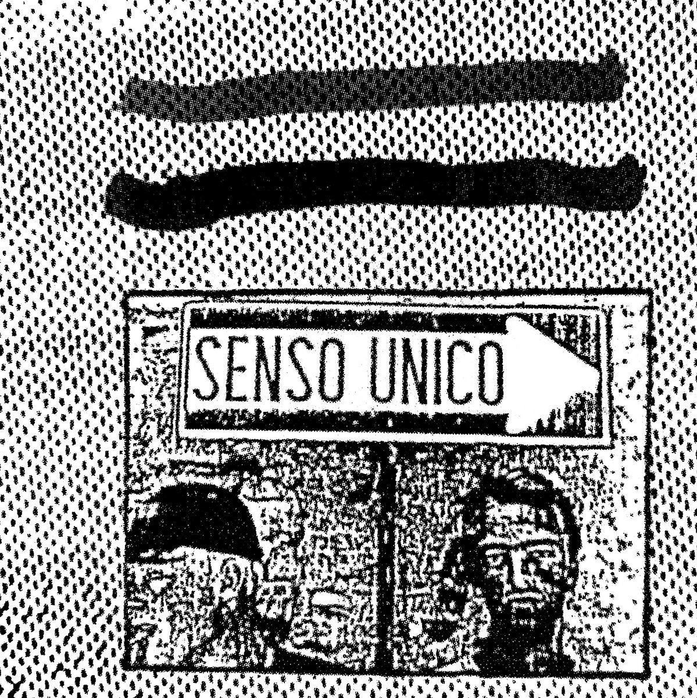
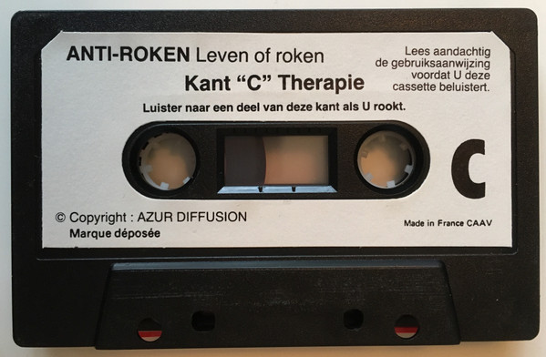
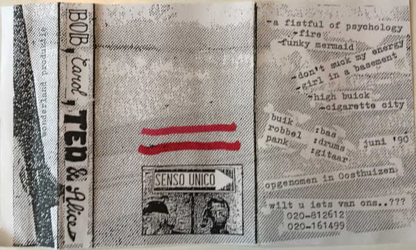
→ I keep thinking about the tension between the physical object and the digital platform. One photo album becomes dispersed across multiple unlinked entries; one never sees the object fully. I was thinking of bringing the digital actions required to view a physical object back into the analog realm. Thus, I made a small (quick and unpretty) writing exercise, describing my actions and searches by hand.
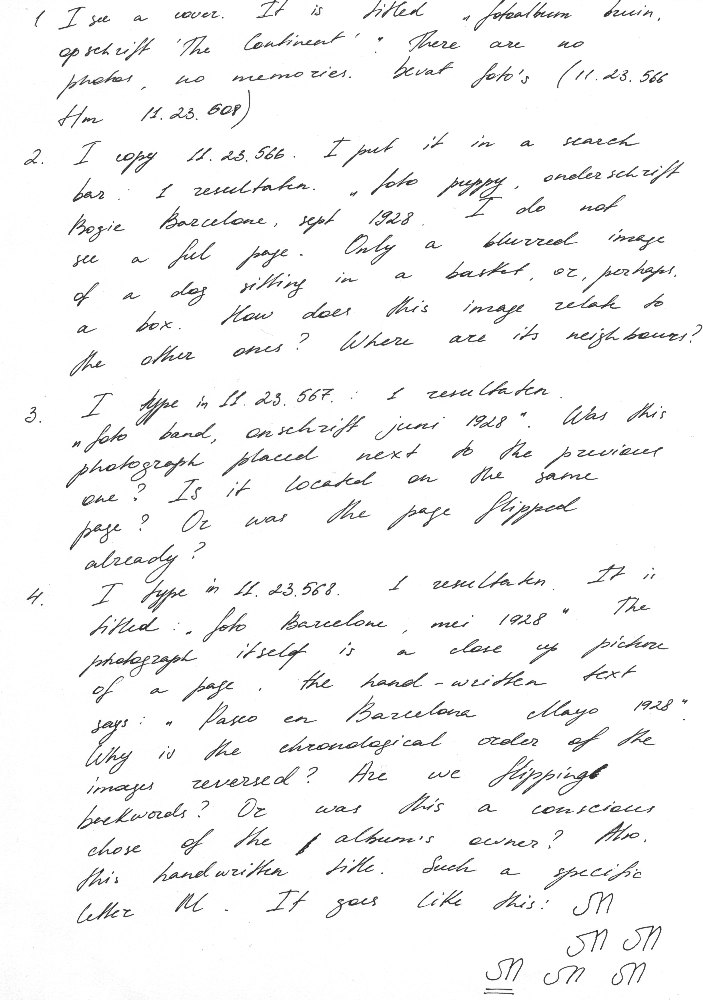
Another collection of loose observations:

→ NB: Dit Fotoboek betreft Boek 24B, niet FB15
→ I discover more and more objects where the archival "hand" becomes particularly visible. As here, corrections happen within the metadata itself, and the archival marking system comes to the foreground, overshadowing the archived object. When does the act of archiving become more apparent than what is being archived?

into “tourist information” and “info”
→ When are handwritten notes on the spreads of photo albums copied into metadata, and when are they being generalised/summarised? → How do private notes and memories fade into arbitrary categories like "info"


→ I find these photographs to contain a very important gesture. On one hand, the archive could’ve “cropped” the spreads to only existing photographs, to “zoom in” only on valuable information (what happens in some photo albums). However, preserving the “empty spaces” is also preserving private, individual choices. Someone left certain image frames empty or took out the photograph that originally was there. I find this unspoken, invisible story of the object very captivating.
Three consecutive entries and their titles from the photo album The Continent

foto Vrouw met jas en hoedje, 1928

foto Vrouw met jas en
hoedje op rotsen, 1928

foto Vrouw met jas en hoedje, 1928
What is the main function of such metadata? Is it to make images “searchable”? Do then descriptions like “Vrouw met jas en hoedje” serve that purpose? On the other hand, should all people in the pictures be identified? What does this certain level of anonymity bring?
I find these image titles contradictory to the whole idea of a private photo album. How would the owner of the photo album title the image?
Does the digitalization of the archives leave no space for things to be unnamed? And what happens when you force names on objects or images whose context is completely unknown, and the name can only follow the literal description? Do three separate images titled "Woman in a coat" identify the same woman or three separate ones? Does this metadata bring us closer to the object's truth, or does it steal even more meaning from an already “faded” context?
Entry 05: In search of focus
So far, I am interested in tracing how the act of archiving can sometimes almost contradict the object being archived.

The first results that appear for the search "Fotoboek 14.” The archive reveals an album as a detailed documentation of the empty covers before it presents its story and contents. I keep returning to the way the yellow note “Boek 14” almost eclipses the photographs beneath it, making the archive's own act of documentation more visible than the memories it is meant to preserve.

Yellow sticker annotations with arrows identifying t. Edja and o. Jan in the “Photo album of Jan Hurkens in the period from 1931. The photos are a representation of his service time at the KNIL and of his family visits to Indonesia in the period after that” (from the object’s metadata). What previously was a family note has now become part of the institutional record. I find myself wondering how the meaning of these annotations changes as they move from a private album into a public archive, and how the act of naming inevitably leaves something or someone outside the frame, quite literally, in this case, covering some faces on the photographs. Who gets to be named and who doesn’t, and what does the act of naming mean in both private and public contexts?
Whose way of looking becomes the archive's?
Loose observations Beeld en Geluid:
→ To use as an example carrier. What is only valued as a carrier example and not content? When does medium become more important to preserve than the information and memories it carries? How is this decision made?
“1 doosje met glasnegatieven waarop afgebeeld Haagse jeugd en een postzegelbeurs. Te gebruiken als drager - voorbeeld.”
→ The use of brackets in metadata. Brackets as a space to express personal opinion or subjective assessment. → When does the archive constitute itself through subjectivity and its human side?

Apart from photo albums, postcards sparked my curiosity. It is a very simple object: two sides of a piece of paper; however, that simplicity highlights an interesting difference between the personal and institutional view of memory. Which side of a postcard does the database display first? I can imagine that for someone cherishing a postcard as a personal memory, the more important side is the one with the text, a note from someone close. However, as soon as a postcard enters the realm of collective memory, it is flipped to display a photo, an illustration, or a caricature. What is the front face of a postcard?
I also find the process of looking at postcards in an archival collection interesting in itself. You see a relatively anonymous, although colorful picture. You can only guess what the message on the other side is. And when you click to know more, anything can wait on the other side: a postcard can be empty, the handwriting can be undecipherable, or you may discover the other side never happened to be digitized.

When does the other side of a postcard appear?


Interestingly, the other side of the postcard appears only when the writing belongs to a famous person and the archive considers the correspondence worth looking at. And even then, the letter's private meaning only “neighbors” the print and doesn't appear in the database as the object's “cover”. → What happens when the private meaning is foreground?

born 1995, died 07-04-1995. Went into British service
in 1944, stationed in Singapore.
Photo album Alwin Geoffrey Buckingham, nickname: Buck. born 1995, died 07-04-1995. Went into British service in 1944, stationed in Singapore. → How do you summarise someone’s life in three sentences? → What does the archive “know” about an individual? Only the moments when private life intersects with the governmental records (date of birth, place of service, marriage, date of death). Nickname as a singular trace of private memory
I also have a rather emotional observation about different archival entries. What feels more intimate? Private photo albums, amateur home recordings, letters, or postcards previously sent to loved ones?


An attempt to capture a digitally dispersed object. What happens within the process of detachment?
→ The cover exists separately from the content. The relationship between images is only mentioned as an object number range.
fotoalbum bruin, opschrift 'The Continent', bevat foto's (11.23.566 t/m 11.23.608)
→ Some images appear on a spread under one metadata title, like “Landscape foto’s Frankrijk, 1928, 4 stuks”; others are cropped out to be separate database entries.
→ The private meaning layer (spread setup) only becomes part of the archive when it aligns with the logic of generalization, making it possible to put multiple images under the umbrella of one metadata entry. Private authorship is only included when it is convenient.
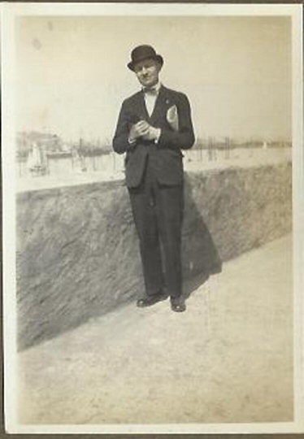
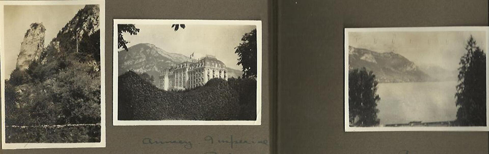
→ Images are not linked; their connection is only mentioned as a range of object numbers in the metadata of the photo album’s cover. Navigation then happens through manual searches of individual numbers.
→ Certain errors occur (metadata mentioning two images when the entry only displays one, certain images appearing twice in different entries, moments of assumption (photo titled “gezin”, when the relationships of people are unclear), and contrary moments of “forced” identification: “foto vrouw met hoedje”, “foto heer met hoed”)
Questions for Huub and Gelders Archief
→ What protocols are in place regarding the photo albums? Why do some photo albums feature full spreads, and others crop out individual photographs? → Spreads with missing images
→ Is there a system that connects different entries into one object?
→ What are the protocols for metadata? What has to be mentioned or described? What is its main function?
→ Why do entries receive titles like “Photo album with 141 photos” or “Photo album with 49 photos of the "Equiter Competitions" of the 1928 Summer Olympics Amsterdam with 32 press photos and 17 smaller private photos from family property of Charles Pahud de Mortanges (1896-1971) with handwritten note from 1972 by Mrs. T.G.B. Pahud de Mortanges-Daamen, born Theresia Gijsbertha Bernardina Daamen (1907-unknown) and second wife of Charles Pahud de Mortanges”?
→ Are there records of decisions about why certain objects enter collections? Is there formal documentation explaining why the archive decides to store each new document?
→ Who identifies the “blank spots” of the collections? And who looks for data that can fill them?
→ What happens when nothing in the images is identifiable? What is the function of the metadata then? Is it to make images “searchable”?
→ Why does the metadata like this appear?
11.23.585 → foto Vrouw met jas en hoedje, 1928
11.23.586 → foto Vrouw met jas en hoedje op rotsen, 1928
11.23.587 → foto Vrouw met jas en hoedje, 1928
→ What level of anonymity can an archive afford? Do completely anonymous, unidentifiable objects enter the collections?
→ Does the digitalization of archives leave no space for things to be unnamed?
→ Is there space for assumption in the metadata? → Titling photographs “Gezin”, when the relationship between people is unclear
→ Is there space for subjective interpretations? → Comments in brackets in the collection of Beeld en Geluid.
→ Some photographs have handwritten notes/captions. When are these notes quoted in metadata, and when are they being generalised/summarised? → Personal notes transformed and generalized into “tourist information” and “with info”
→ What sequence of steps does a new photo album go through after it enters the collection?
→ Is there a conscious decision behind which side of a postcard is displayed first in the collection?
→ Do you, as an archivist, sometimes develop a personal (intimate) connection to content or a story you are preserving?
→ Do you feel nostalgia when working with some images?
→ Why are there Olympic photo albums (NOC) in the Gelderland collections?
→ Are all private annotations preserved?
Yellow sticker annotations with arrows identifying t. Edja and o. Jan in the “Photo album of Jan Hurkens in the period from 1931. The photos are a representation of his service time at the KNIL and of his family visits to Indonesia in the period after that” (from the object’s metadata).
Notes: Gelders Archief visit, 17 July
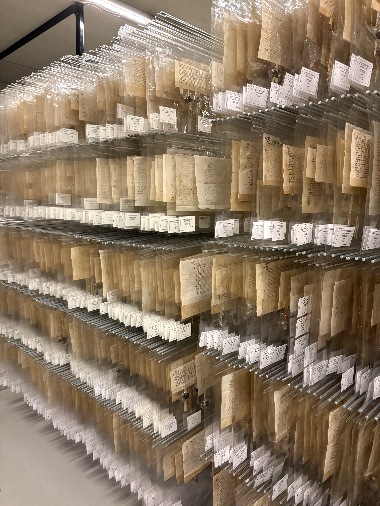
collectionstrust.org.uk → Spectrum
General European guidelines for archiving
Several competing standards for metadata. Museums vs. governmental archives
A set of minimal information when a new object enters the collection:
- Object number
- From whom is it acquired?
- Is it a gift, a donation, loan, acquisition, etc.?
- Date when the object enters the archive
→ What happens when nothing on the images is identifiable? What is the function of the metadata then? Is it to make images “searchable”?
Very literal image description → Keywords to fall back on to → AI search. Question of capacity. Time limitation. A set time per acquisition. Volunteer work
oorlogsbronnen.nl - Collective Second World War archive
The scope of the collection dictates how detailed you will be with categorization.
Chair example: If an art museum has a few chairs in the collection, they might combine them all into one category, “Chairs”; however, a specialized furniture archive would instead have separate categories for wooden chairs, armchairs, chairs with armrests, etc. How do archives merge different categorization systems?
Thesaurus → hierarchical list, tree structure. Furniture → chair → chair with arm support. Link data - framework for managing data on the internet.
RDF - resource description framework: triples. Shared list of keywords. URI. Standard maintained.
The RDF data model is similar to classical conceptual modeling approaches (such as entity–relationship or class diagrams). It is based on the idea of making statements about resources (in particular web resources) in expressions of the form subject–predicate–object, known as triples. The subject denotes the resource; the predicate denotes traits or aspects of the resource, and expresses a relationship between the subject and the object. For example, one way to represent the notion "The sky has the color blue" in RDF is as the triple: a subject denoting "the sky", a predicate denoting "has the color", and an object denoting "blue". Therefore, RDF uses subject instead of object (or entity) in contrast to the typical approach of an entity–attribute–value model in object-oriented design: entity (sky), attribute (color), and value (blue). (from Wikipedia)
Question that stayed after the conversation: What type of metaphors are used to describe archiving? How do these metaphors form the collective understanding? What are they limiting or obscuring? → Wikipedia’s sky example vs. Huub’s chair example. I observe a shared type of language and metaphor choice. Similarly, in Beeld en Geluid, for the question “what speculative scenario can happen to the physical archive,” the first answer that came to mind for multiple people was “if the bomb falls.”
Synonyms as part of keyword connection.
Connection without human interpretation. → Database made searchable for computers. Curating different search procedures for computers and people.
Index under development.
How do we keep search easy for volunteers while adding layers of complexity for computers? Two sides of the problem.
*Question that stayed after the conversation*. Is the aim of linking all the archives, making them hyper searchable actually benefitial?
W3.org
CIDOC CRM → link data heritage for cultural institutions
Doing it together within different approaches → Dutch strategy for uniting different archives.
Schema.org → Vocabulary (too broad for certain collections). In the Netherlands used as a basis, but can be expanded with other data models for collections that need it.
Space for subjectivity (?)
No single model can do it all.
Various objects is always a category in every archive. And according to Huub, always the most interesting. Uncategorized objects that the archive still wants to keep.
Decision-making process. What do you keep? Who makes that decision? Manual for the employees. Decision-making depends on the employee, so this process is very subjective. The object's condition is the most important factor.
Huub’s story: Bee keeping association. One employee decides whether it is relevant to the archive — the matter of capacity.
Why are there Olympic photo albums (belonging to NOC) in the Gelderland collections?
The NOC is part of the Gelderland Collection solely because of its office in Arnhem, and because it uses the archive’s services.
Are there people who oversee the collection and identify “blank spots”? According to Hanneke, in the coming years, the archive plans to contact people and acquire “missing” information.
During the tour, we’ve passed stored newspapers. As archived objects, they are interesting because you always know that certain editions were printed daily or weekly; you always have a number and a date attached to every issue. So it becomes the easiest object to identify “blank spots”. You always know which issue you don’t have. However, according to Hanneke, in this specific case the archive is not trying to collect all the issues. Which newspaper issues then end up in the collection? And what is the decision-making process behind that?
What is the archive’s logic of collecting?
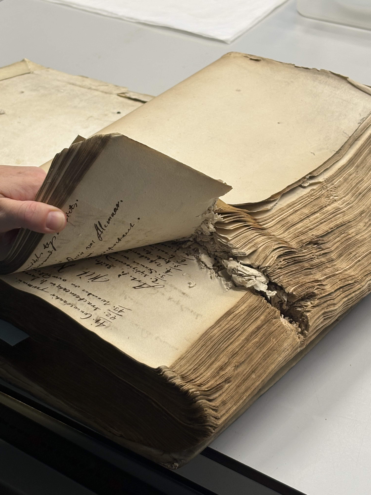
Church archive
According to Leanne, this book, as an object, holds more history than its content. Medium/object becoming more important than the information it encapsulates. → voorbeeld van drager
I find it interesting that the restoration process happens only after a visitor requests a scan. So, public interest directs preservation. What happens to objects that no one is interested in? → Present “shaping” the past.
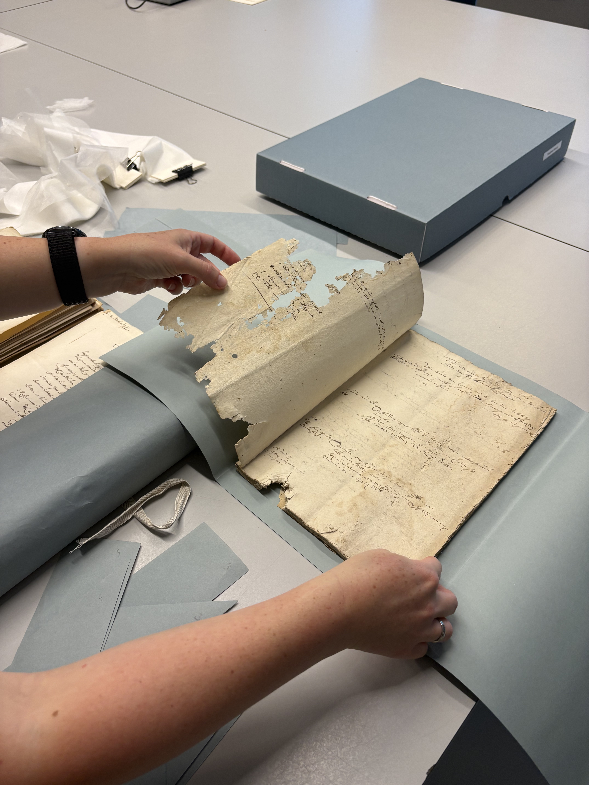
Every request that leads to restoration is assessed for importance.
According to Hanneke, the archive is always looking to have the original in its collection, so that “Truth is in the archive”.
→ Do you as an archivist sometimes develop personal (intimate) connection to content or a story you are preserving?
Hanneke says that she totally does. She often receives requests for family archives or adoption files, and sometimes connects to stories, despite them often only being represented by legal documents. Eventually, all documents speak about “your identity or where you come from”.
How intimate does it go? → Love letters, diaries.
Gelders Archief holds some family archives. When is the family important? Whose story is preserved and why?
What is being recorded about private lives? Usually, only official documents remain from private stories and lives.
Hanneke finds moving interesting. Why did people move? Usually, these are some of the only records of someone’s life she can find. What is recorded are the outliers of normality. The only traces of private lives that are preserved lie at the intersections with governmental bureaucracy: birth certificates, moving and registration records, marriages, etc.
Do private photo albums then play an important role in preserving other perspectives?
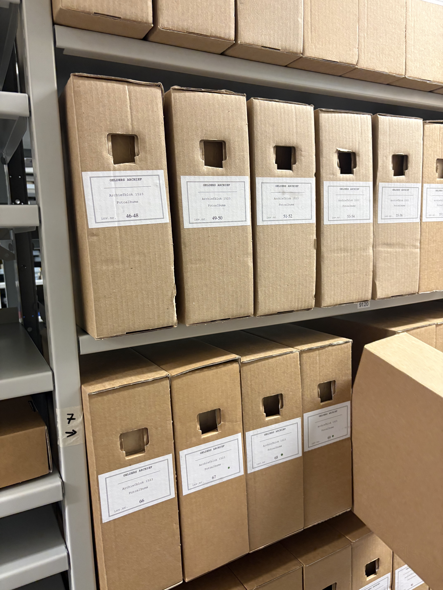
Reflection after the visit:
The biggest impression after the Gelders Archief visit is a fascinating sense of intertwining scales. On one hand, general archiving development strives for digitalization, globalization, unification, and the merger of collections; on the other, individual decisions, volunteers, and the limits of time and labor shape the content that constitutes the archive itself. How do global interconnected systems get inhabited by individual entries, subjective metadata choices, and labor that can’t be subject to digital optimization?
The archive grows and develops through two coexisting paradigms: the individual and the global. Returning to metaphors used to describe the archiving process, I have one too. It reminds me of a number line. It is eternal in both senses: it reaches the biggest numbers at both ends, and it is eternal in every smallest part of itself. You can endlessly zoom in on the numbers between 0 and 1.
In the same way, a globalized archive ever-reaches the most complex linking systems, or the most systematized thesaurus lists, while a volunteer ever-deepens the metadata of a singular entry, or there is no volunteer capacity at all. What happens when the ever-more-systematic archive doesn’t have enough smallest fractions of individual knowledge to populate it? What is the value of a longer number line when it no longer has enough numbers to spread evenly between its ends? I can easily imagine the most detailed thesaurus of terms, with only one or two examples in each category.
Should archival development then focus on the smallest, "site-specific", local deepening of knowledge rather than on bridging the ends of global collections?
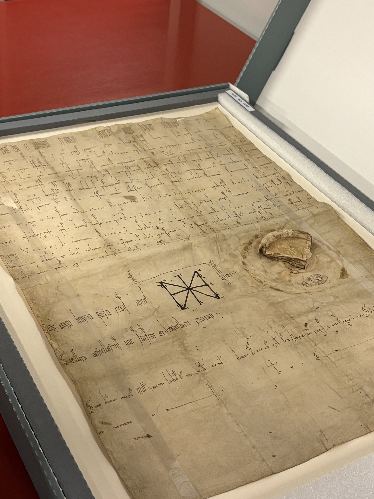
Entry 06: opschrift 'The Continent'
What am I saying?
I’ve been thinking a lot about my contribution during this residency. I find some of the findings during the rabbit holes within Gelderland Collectie quite fascinating. I am now seeing them as “site-specific,” or rather archive-specific, illustrations. How can I arrange them into a visual narrative that can give an entry point into a bigger discussion?
How do you navigate? Where do you go?
fotoalbum bruin, opschrift 'The Continent', bevat foto's (11.23.566 t/m 11.23.608)
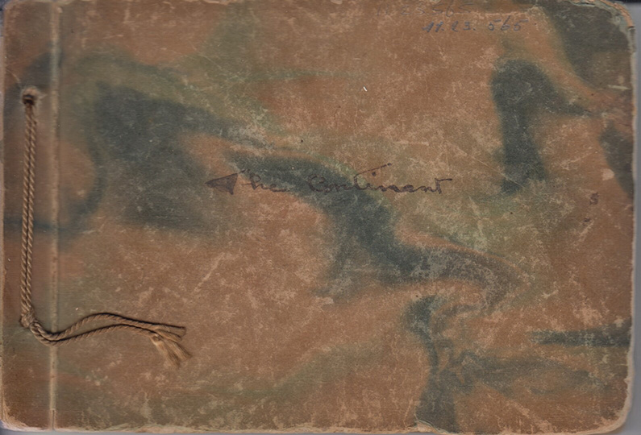
- The archive transforms private memory collections into independent objects. What happens when connections become abolished?
- What is saved and why is it important. Spreads instead of individual photographs.
I want to focus on the photo album number 11.23.565 and pose several questions/observations:
- Fragmentation: The photo album consists of many individual entries. How are they navigated? The cover page leads to each image; however, the images do not lead back to the cover page. The user navigates only by sequential item numbers. What does this fragmentation mean for a physical object?
- Why is this photo album in the collection? From the outside, it seems insignificant: the people in the photographs are unidentified, and it is unclear to whom this collection of images belonged. Why is this particular photo album worth preserving? Who decided to preserve it and why? Is there documentation of this decision? Can the object itself serve as an entry point into understanding/visualising the archiving logic? Can I find the value of this photo album through re-curating its contents?


The photo album is part of the Collectie Butterfield of Vrijheidsmuseum. The collection focuses on the Second World War. However, the album is dated 1928. How does it relate to the collection?
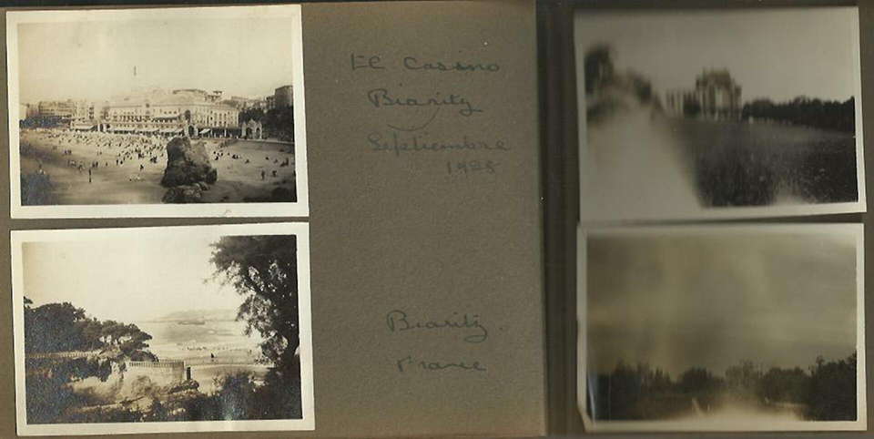
- In page entries, images appear individually cropped, or very rarely as groups on a strangely cropped spread. Private authorship is preserved only when it is efficient and convenient for the archival process. Four images appear together as a spread, only when they can be summarised as one metadata entry: “Landscape foto’s Frankrijk, 1928, 4 stucks”.
- As a designer, I am a fourth layer of decision-making. First being the photographer, second – the author of the photo album: selecting images, arranging them on a spread, writing notes, naming people, and third being the archive as a volunteer: translating the object into metadata, disassembling it into the individual entries, making assumptions, generalizing, omitting details, or doing extensive research and trying to preserve as much as possible. How does the object survive all these transformations? What parts of its life do I preserve?
The archiving pitfalls of generalization, systematization, naming, or selection are known, but where and how do they constitute themselves in specific collections, photo albums, or pieces of metadata? How can these processes be made tangible or visible in an example of specific records?
How would I reconstruct this object?
I observe the photo album as an object in three different states, each with its own meaning:
Object 1: An object of private memory: an original physical photo album, now in the archive's collection. An object where everything stayed as it was created: all photographs have their place. The private authorship is preserved.
Object 2: A digital archival perspective. A collection of digital states of the photo album: individual entries, their appearance in the search grid, metadata, and object numbers. How does the institution see the object? What is saved as important and what is omitted?
Object 3: A speculative combination of both. How do you understand the physical, private object when only navigating the digital one? What is lost in this translation? What kind of object survives?
I want to reconstruct my encounter with the archive. What does it feel like to know an album only through metadata? What does it mean to be the fourth layer of authorship? How do I recognize myself or the archivist as part of the object?
→ Close reading of a single object
During our tour at the Gelders Archief, Hanneke said: “Truth is in the archive,” implying that the physical original preserved in the building is the ultimate truth. Are there, however, other truths? If so, where are they located, and how can they become visible?

The photographs appear floating, flexible in size, unconnected to a specific location on the spread. The digital representation of the object creates this uncertainty. What happens when my actions and archival data gets the fixed background?
Dear Huub! I hope you had a nice summer! I am emailing you with a small question regarding the MEE residency. Since it is coming to an end, I decided to focus entirely on one photo album from the Collectie Gelderland: object number 11.23.565. It is part of the Collectie Butterfield of the Vrijheidsmuseum. Cees advised me to ask you whether you have direct contact with anyone at that organisation. Do you know the best person to contact regarding this collection, the photo albums, or perhaps this particular photo album? Please let me know if you have someone in mind! Kind regards, Aglaya
Entry 07: 1928 Beeld en Geluid travel archive
Loose observations:
→ 01-01-1928 as a default date for videos of the time period
→ I find it interesting that the necessity of identification inevitably leads to assumptions. The metadata date field must be filled in. So when the film's date and month are unknown (which I can imagine happens quite often), the entry gets a “placeholder” attribution to January 1. It seems like the archive physically can't keep things unknown. But what does this assumption mean to the original context of the object? Does this mean the preservation process requires creating a sort of fabricated backstory?


is it somehow related to the used technology?
→ Street artist with dancing bear (very dark); → the use of brackets
→ The assumption layer: The video is identified as late 1920s → the date field says 01-01-1928. Why does the drive for identification conflict with accuracy?
→ When reusing the original, state: Collection family association Maas Geesteranus and Netherlands Institute for Sound & Vision. Public domain as of 1-1-2036, based on the creator's death date in 1965. Formal transformation from private to public
Why do videos, despite being part of a family archive, create a greater impression of distance than the photo albums? When is something perceived as history, and when is something seen as part of a private, intimate story?
search: reis (01-01-1928) results: → DE REIS VAN HET BELGISCHE KROONPRINSELIJK PAAR DOOR NED. INDIE → MET DE KONINKLIJKE FAMILIE OP REIS IN 1928 → AMATEURFILM VAN COR VAN DE KOPPEL OVER NEDERLANDS-INDIË 1,
REIS VAN GENUA NAAR NEDERLANDS-INDIË


Who gets to travel and where? Who is depicted on video and why?


→ Collection of Adrien Henri Maas Geesteranus
→ Collection Cornelis van de Koppel
1928, AMERIKA USA
"various cityscapes"; "family visit near Cleveland"; "man and woman dance in front of the camera" → similar descriptions as to the photo album 11.23.565


The whole video feels like a fun, playful part of the family archive. However, I still feel a distance somewhere. What makes photo albums feel more intimate than amateur videos? The photograph leaves more space for wonder, for not knowing. Despite the archive's effort to bridge that gap, the photograph, as a medium, still leaves a sense of intimacy: who were these people, how were they related, and what were their characters like? The video answers these questions more directly and leaves less room for doubt. I feel like my experience of the archive material directly engages with how much information is known. I am particularly drawn to pieces that are “lost,” inconclusive, or unidentified. Strangely, this “incompleteness” in photographic material correlates directly with how intimate it feels to me.
Entry 08: Tratteggio
Notes on the reconstruction of the object:
How transparent should my choices be? How close to the original should I act?
Can speculation about an object unfolding between digital and physical spaces disrupt the way we perceive archival memory?
In the context of this residency, I was thinking a lot about the role of the painting conservationist. In particular, the practice of retouching, called tratteggio.
Tratteggio, as well as its derivatives, is a transposition of a representation into a system of vertical lines that, viewed from a distance, form the colour (or pattern) that integrates the lacunae with the original. This kind of retouch rebuilds the image and makes it more legible, being at the same time apparent and recognisable to the observer.
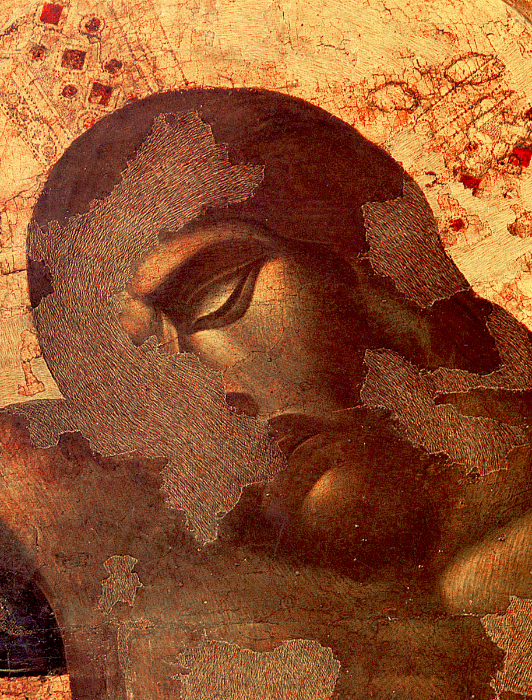
tempera and gold on wood.
Florence, Santa Croce, Sacristy
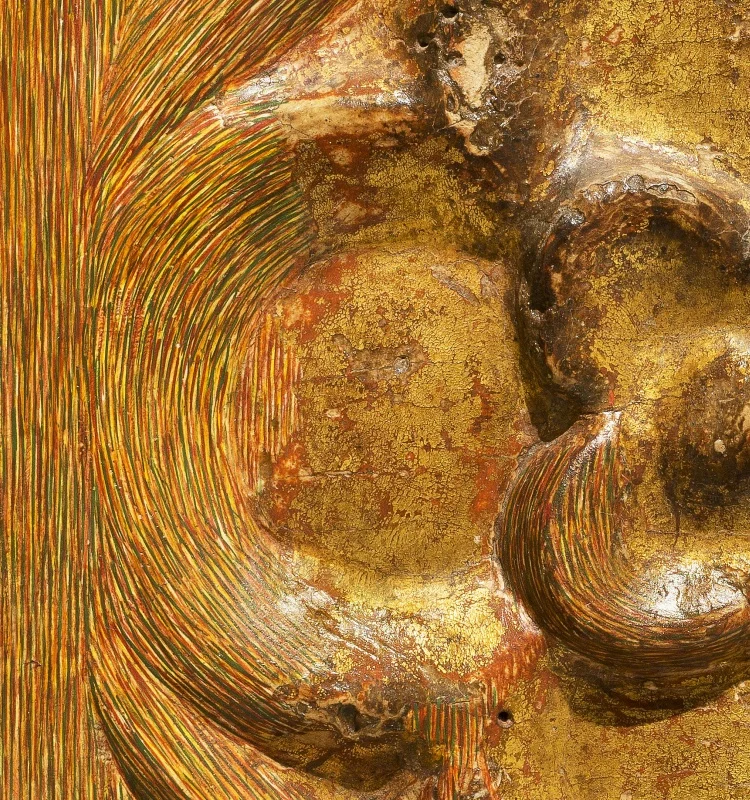
This technique enables “avoidance of hypothesis” when replacing the missing parts of the original artwork. It is used more often when larger areas of the original paint layer are missing. This way, the conservator does not speculate or imagine what the original painting depicted. The empty spaces are retouched to blend with the neighboring areas, making the overall image consistent enough that the viewer is not distracted by voids, while keeping them visible enough to be distinguishable as additions. In this case, restoration respects both the original piece and its life and changes after it left the artist’s studio. The new layer doesn't try to imitate; instead, it embraces the formal distance between itself and the artist's original intention.
Coming back to my role as a designer, how transparent or “distant” should I be when using archival material? I observe that an object in a digital collection is often a complex entanglement of the physical object, its digital representation, the author’s or owner’s decisions, and the archivist's vision and choices, often limited by time or guidelines. The final object is a layered concept, holding the imprints of the “hands” of many people. Then, as a designer, should I keep my distance, make my presence obvious and traceable? Or should I add to the entanglement, creating even more layers of meaning and stealing even more original context from already-lost images?
Using trattegio as a reference, I am particularly interested in finding my role in respecting the object at all its previous stages, restoring the legibility of the private object without pretending to know what got lost in the archival transformation. This also highlights the overwhelming presence of such transformation, using gaps between the images to visualize the autocratic nature of archiving.
I do not know how the fragmented photographs existed on the original photo album spread. As a designer in control of archival material, I want to avoid hypothesizing about the authors' choices, their intentions with the paired images, and the layouts. I want my speculation to reflect the object's afterlife as an archival entry, presenting the gaps between the images that appear as a result of digitization, cataloging, and interpretation. The goal is not to avoid making decisions, but to avoid disguising decisions as historical truth. I want to embrace what is unknown and unidentified, and expose the harmful drive to know everything, like forcing entries to be attributed to an exact date, or having to name all depicted people, reducing them to titles like “woman with a hat”.
I want my object to function like tratteggio, reconstructing my encounter with the object, as it was available to me. I will weave the gaps between the scattered images together to make the object coherent enough to recognize its fragmentation, but alien enough to prevent this reconstruction from purposefully trying to imitate the original.
When I place the digitized photographs back onto a simulated album spread, I have to decide their scale, position, order, and relation to one another. Each decision produces information absent from my digital encounter, exposing what the archive steals from private authorship.
Entry 09: Pixel-sorting and thoughts
→ Looking into possible ways of pattern making to visually illustrate the trattegio technique. Some of the first experiments were done with pixel-sorting, later on I switched to dithering algorithms.


→ What am I basing the pixel-sorting algorithm on? How can I adapt the pattern for screen-printing?
→ Brown as the metadata and the arbitrary factor of the sorting procedure.
→ Bias towards the virtical lines, visual reference to tratteggio
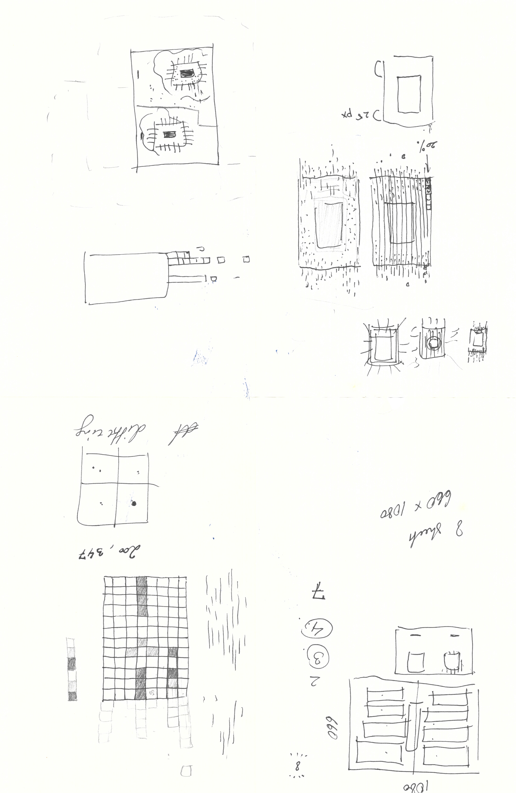
I wanted to add another layer of code that responds to metadata from the photo album description. In the database, it is mentioned as “fotoalbum bruin, opschrift ’The Continent’”. I wanted to play with what brown means for a person and a computer, so when analyzing the original image, the code prioritizes colors most similar to #a52a2a (the color “brown” in CSS). Thus, the computer has a preference for saving certain parts of the image according to its "objective” interpretation of subjective, human classifications. The pattern representing the background around the images is then expanded further, attempting to “weave" the missing gaps between the photographs.
This pattern also lets me screen-print the images, creating a halftone effect. I am thinking of screen printing in white, so the light blue archival paper will provide the only contrast, allowing the images to be subtle but readable. This way, I hope to portray the tension within the archiving process: on one hand, it allows images to be found and seen (contrast in paper); on the other hand, it “eats them alive”, detaching the photographs from each other and their context, assigning names to people and things that don’t always have to be named, and transforming memory into historical representations.
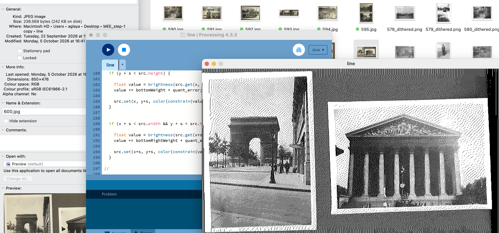
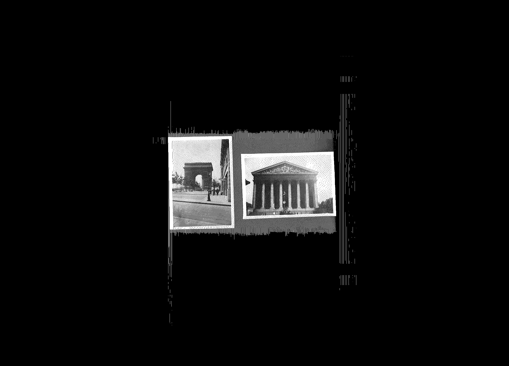
Entry 10: The object and its context
Dear Rense,
My name is Aglaya Drobysheva. I am an artist and graphic designer based in Arnhem. I am currently part of the MEE-Residentie organized by Beeld en Geluid and Netwerk Digitaal Erfgoed.
For the past four months, I have been researching photo albums within Collectie Gelderland. While narrowing down my research, I’ve decided to focus on one of the photo albums from the Vrijheidsmuseum collection: object number 11.23.565.
I am writing this email to ask a few questions about it.
I would like to inquire about the copyright regulations connected to this photo album and the images within it (object numbers 11.23.566 to 11.23.608). I was planning to creatively reuse these photographs as part of the residency's outcome, and was wondering whether it would be possible with this item.
I also wanted to ask whether there is any information available about this photo album, as the metadata on the website is very limited. Maybe you have records about who it belonged to or how it became part of the collection?
Also, on the website, it says that this photo album is part of Collectie Butterfield. As I understand it, this collection mainly centers on the period of the Second World War, while the photo album contains photographs primarily from 1928. I was wondering whether there are any records on why this photo album belongs to this specific collection?
I am generally very curious to know any information about this object, so if there is anything else known about it, I would be happy to hear it!
Looking forward to your reply!
Kind regards,
Aglaya
Eric Butterfield was a British veteran with the Air Despatch. He was a good friend of our curator, mr. Frank van den Bergh. After Mr. Butterfield’s death, a large chest full of his belongings was donated to our museum. The curator knew the context of these items and was planning to describe them in our collection database, but before he could do so he suddenly fell in himself and died 6 months later. As such, the items were never properly described and some of the context behind them has been lost. We do not know why the 1928 album was in this collection. Perhaps it was simply a personal album of mr. Butterfield with no relationship to World War 2. We have preserved everything in the chest in case anyone ever recognizes the items and can explain their significance.
Simultaneously with dithering research and testing, I got in contact with the curator of the Vrijheidsmuseum. I wanted to learn more about the photo album's context. Previously, a certain level of anonymity helped me shape the visuals and the project's storyline. Now I wanted to compare my own expectations, impressions, even romanticizations with the object’s actual story. The museum's reply, however, speaks for itself. The photo album number 11.23.565 will never get its chance to be fully described, grasped, or remembered. I think this email loops the whole research back to its beginning. During the first Beeld en Geluid visit, we discussed that preservation of objects not only relies on their condition, but also on the machines of that time capable of reading the carrier, and, even more importantly, on people’s knowledge of how to operate, repair, and maintain them. Without people, there is no memory, and all that remains are fragmented artifacts kept deep in the archives.This further raised questions about image rights. The photographer cannot be identified (perhaps he was a man in a hat), so the attribution to 1928 doesn’t provide enough certainty that the proper period has passed for the images to enter the public domain. I hoped for a clear yes-or-no answer, but instead faced yet another uncertainty. I was thinking about what was said during the Gelders Archief visit: “The truth is in the archive.” It actually seems to me that the only truth, though silent and indecipherable, is indeed the physical object itself, but the trace of it in the records of the system is actually a multitude of half-truths, generalizations, and assumptions, bringing it further away from what it potentially meant in the hands of the rightful owner.
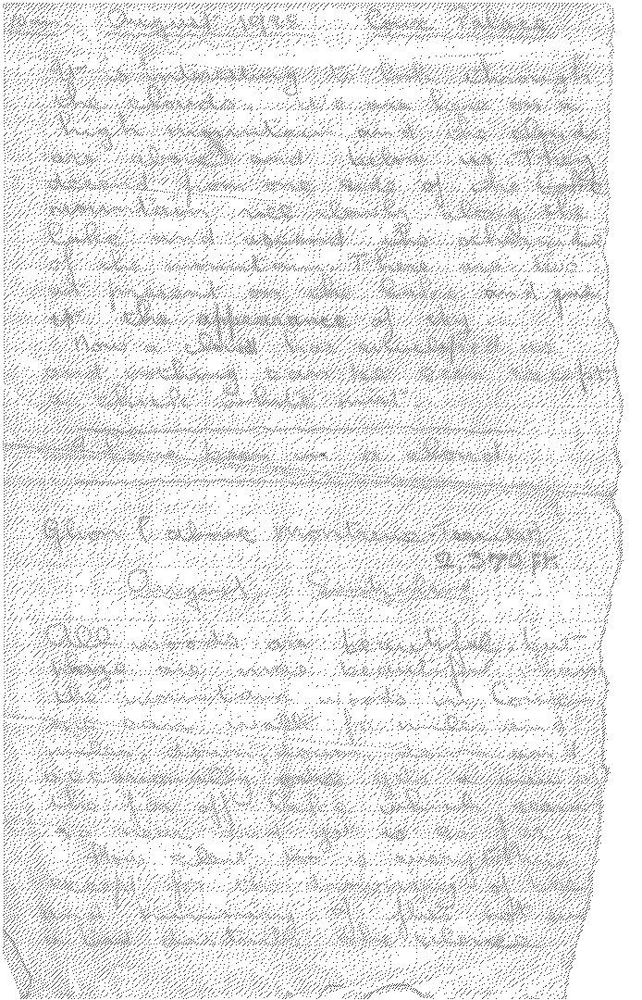
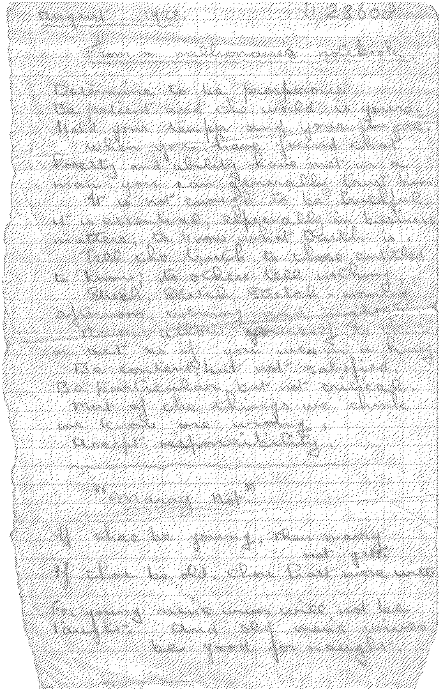
Just as I had accepted that I would never get to know the story behind the album, I discovered that I never actually reached the final entry of the album's contents (I again blame fragmentation). The final two entries, which I previously thought weren't connected to the images, actually fit within the range (11.23.566 t/m 11.23.608). They were two sides of a letter, or rather a diary entry, yet again bringing the story to a full circle, giving the smallest glimpse into private story behind the metadata: “It is interesting to look through clouds. We are here on a high mountain and the clouds are above and below us. […] I have been in a cloud.”
Entry 11: Final desicions and reflections
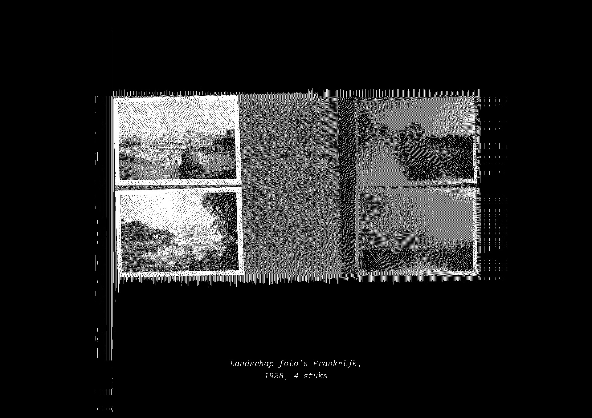
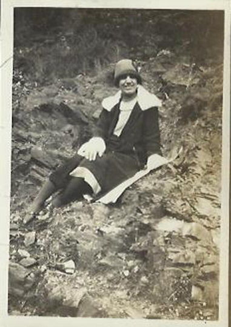
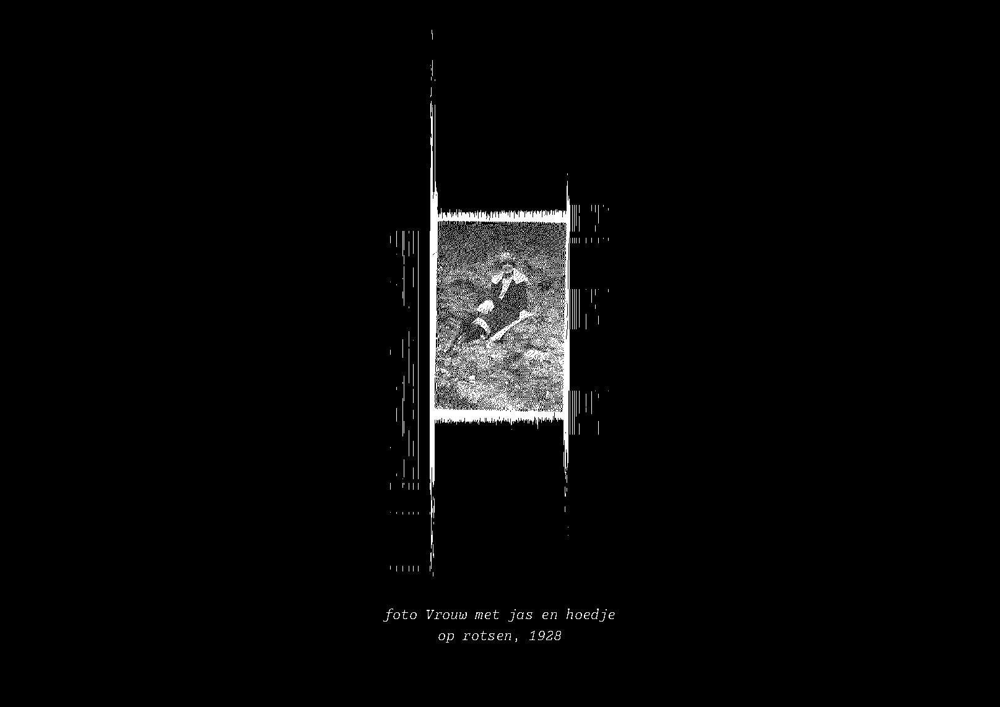